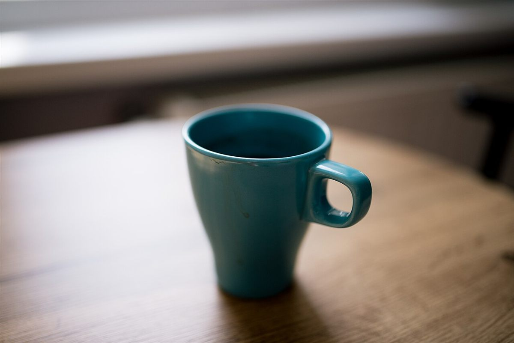
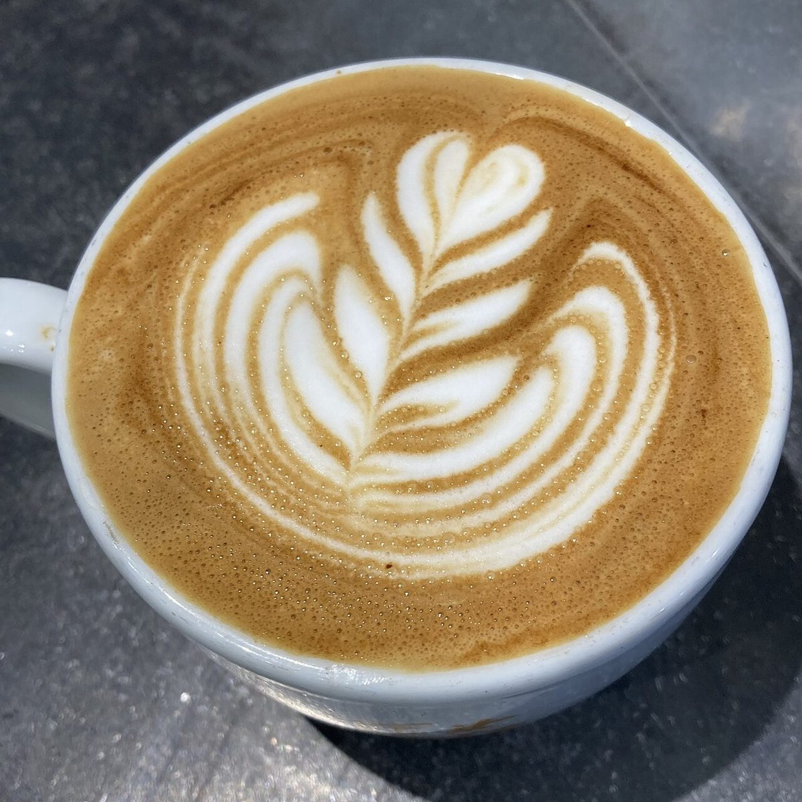
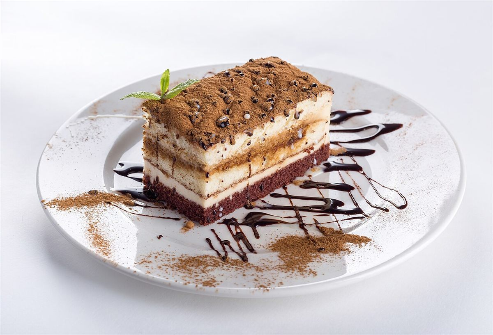

ケーキ
甘さをおさえたシンプルなケーキ(ショートケーキなど)。価格は準備中。

CAKE & COFFEE / HIGASHIKAGAWA
子どもから大人まで食べられる、甘さをおさえたやさしいケーキ。国道沿いのオレンジの看板の下で、ひと息つく一皿を。
オレンジ色の看板が目印掲載写真はフリー素材のイメージです。店舗の実際の様子・商品ではありません。実際の写真はご提供いただいたものに差し替えます。
ABOUT
cafe courageは、香川県東かがわ市松原、国道11号沿いにあるケーキとコーヒーのカフェです。男性パティシエが営み、子どもから大人まで楽しめるように、甘さをおさえたシンプルなケーキや焼菓子を用意していると紹介されています。
温かみのある明るい店内でいただけるほか、ケーキや焼菓子のテイクアウト、焼菓子のラッピングにも対応していると紹介されています。
店名「courage」の意味・由来は公開情報では確認できませんでした。コピーや配色(看板のオレンジ)は、制作側のイメージです。

MENU
ショーウィンドウのケーキと焼菓子が中心です。ベイクドチーズケーキ、プリン、ショートケーキ、カフェオレなどが紹介されています。ドリンクとケーキを選ぶケーキセットもあり、季節のケーキも登場予定と紹介されていました。内容・価格・営業時間は 準備中 です。
甘さをおさえたシンプルなケーキ(ショートケーキなど)。価格は準備中。

ベイクドチーズケーキやプリン、焼菓子。価格は準備中。

ドリンクとケーキのセット。内容・価格は準備中。






VOICE
以下は制作側が作成したイメージ例で、実在のお客様の声ではありません。
イメージ例甘すぎないので、最後まで気持ちよく食べられました。コーヒーと一緒にゆっくりしたくなる味です。
ご来店のお客様(イメージ)
イメージ例駅の近くで寄りやすく、店内も明るくて落ち着きます。ケーキを選ぶ時間も楽しいです。
ご来店のお客様(イメージ)
イメージ例家族へのお土産にケーキをテイクアウトしました。素朴なやさしい味で、子どもも喜んでいました。
ご来店のお客様(イメージ)